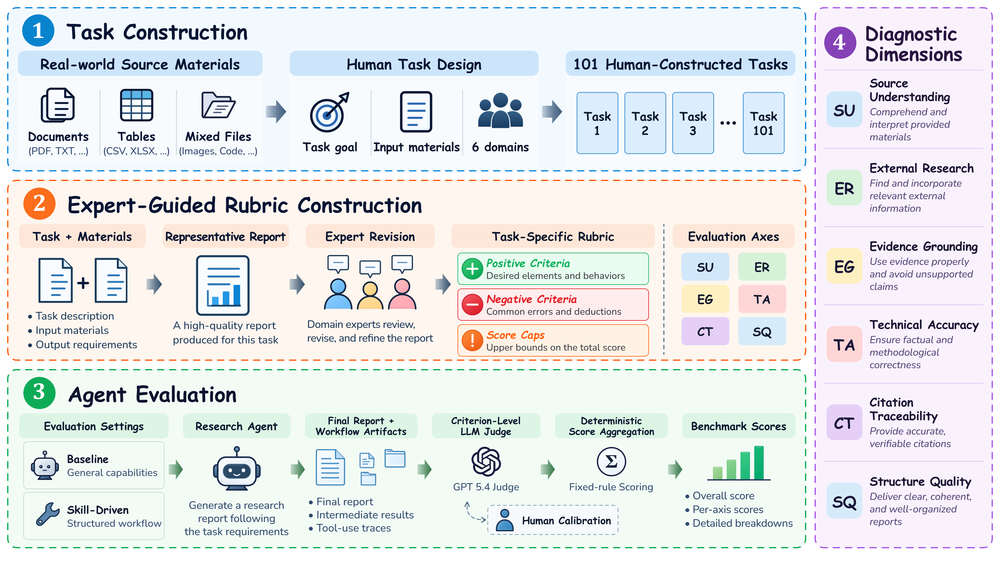
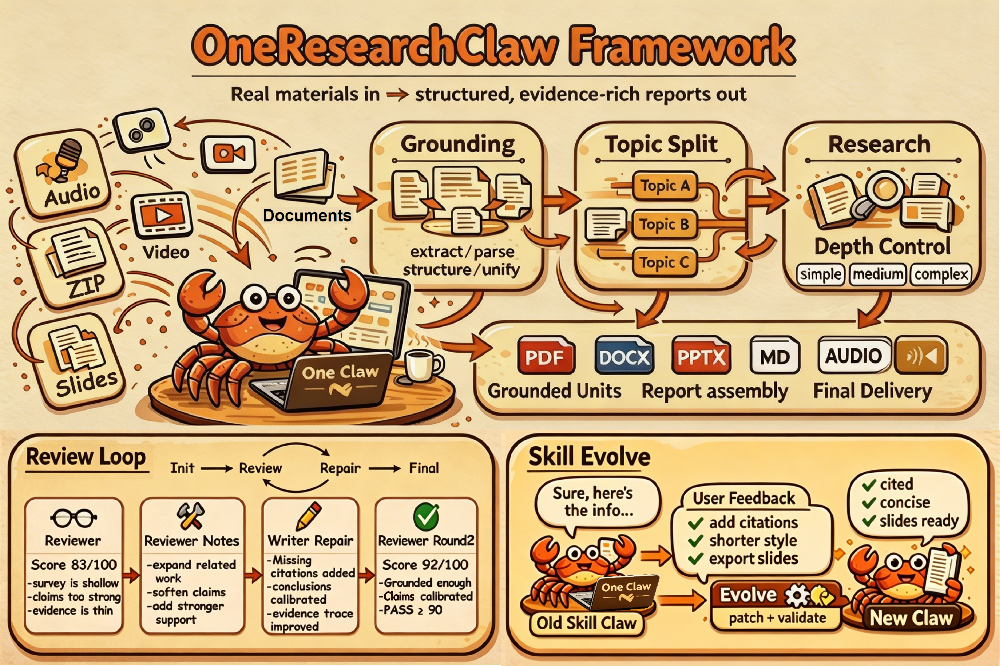
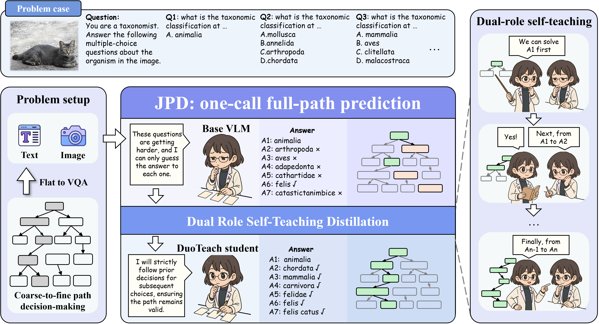
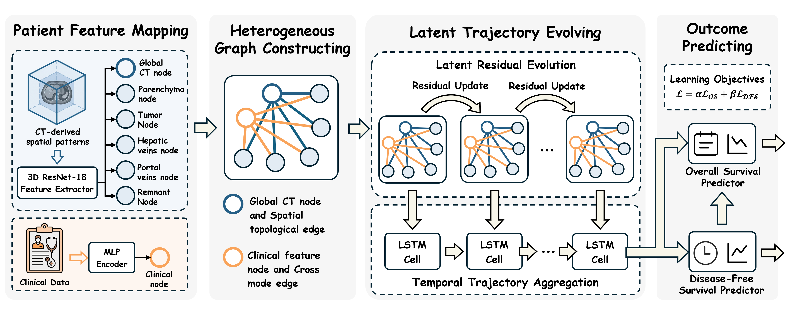
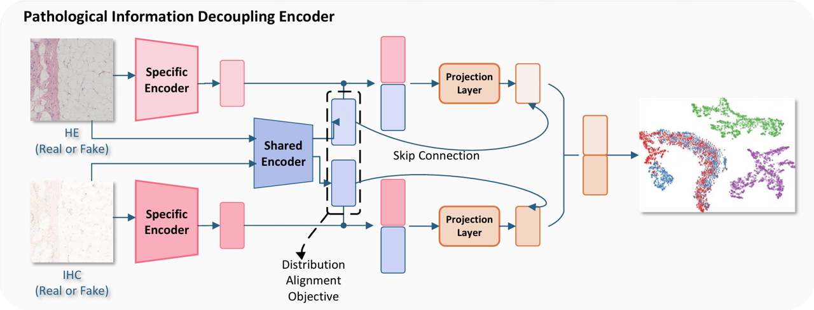

OneResearchBench: A Workflow-Aware Benchmark for Skill-Driven Research Synthesis from Heterogeneous Inputs.
- arXiv preprint. First author.
I am an incoming master's student at BIVLab, University of Science and Technology of China (USTC), and expect to enroll in September 2027. I am currently an undergraduate student majoring in Computer Science and Technology at North China Electric Power University (Baoding), with graduation expected in 2027.
I am interested in intelligent systems that learn through interaction and experience, continually expanding their capabilities in understanding, reasoning, and acting.
My current research interests include:





Master's Student · BIVLab
B.Eng. in Computer Science and Technology